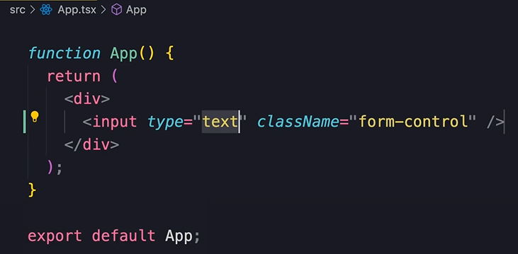
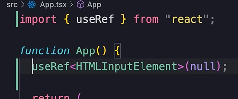
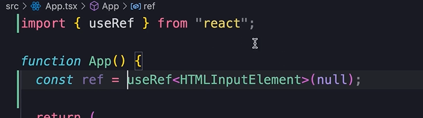
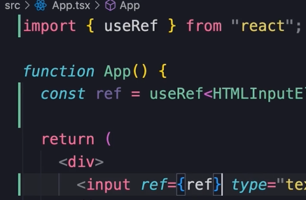
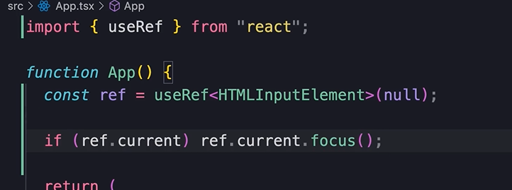

Understanding the Effect Hook
Before we talk about connecting our react apps to a backend, you need to understand how to use the effect hook in react.
Earlier we learned that we should make our react components pure functions.
We learned about pure components here.
A pure function should not have any side effects, and should return the same result everytime we give it the same input.
To keep components pure we should keep any changes out of the render phase.
Examples of side Effects
But there are situations where we might want to store data in local storage, or call to the server to fetch/save data, or maybe we want to manually modify a DOM element
None of those situation are about rendering a component.
They have nothing to do with returning jsx markup.
So where can we implement them?
This is where the effect hook comes in!
With the effect hook, we can tell react to execute a piece of code AFTER a component is rendered.
Example with text input
Start with a text input in the App...
Let's say that when the App starts, we want to put focus on this input field.
To do this, first we need to use the ref hook to get a reference to the input field.
Reference the input field
So call useRef, initialize it to null, and set the target element...
It returns a reference object that we store like this...
Then we associate the ref obj with the input field...
Finally, check if ref.current is defined, if it is call ref.focus()...
Here's the thing, this if statement has nothing to do with returning jsx markup.
With this piece of code we are changing the state of the DOM.
That is to say, this piece of code has a 'side effect'.
It's changing something outside of its component.
⚠ That means our component is no longer pure!!
💡
To make our component pure again, we can use the effect hook.